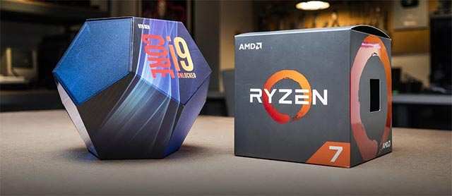
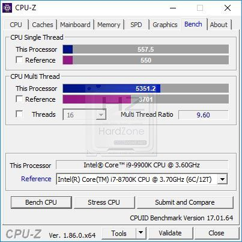
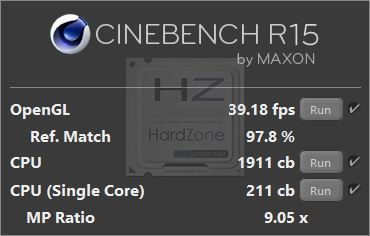
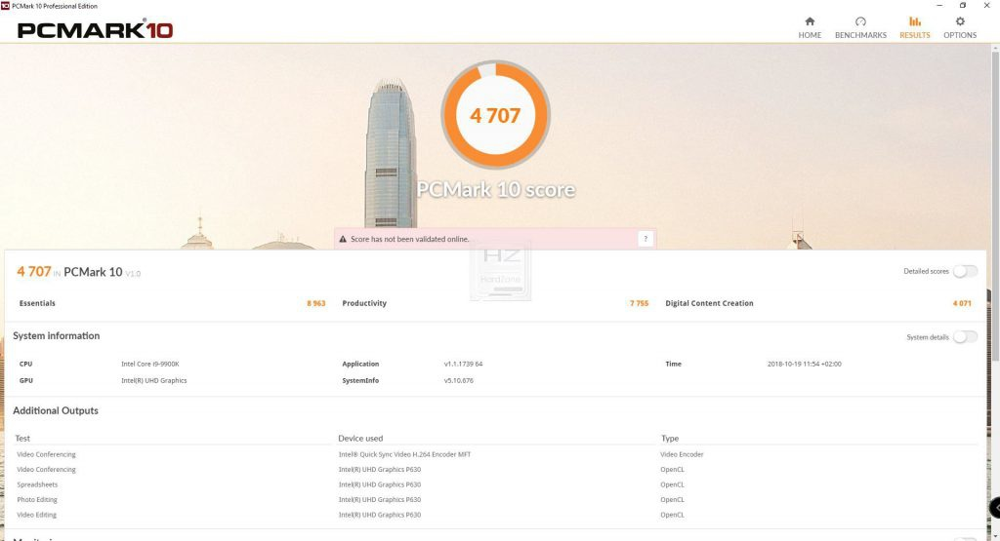
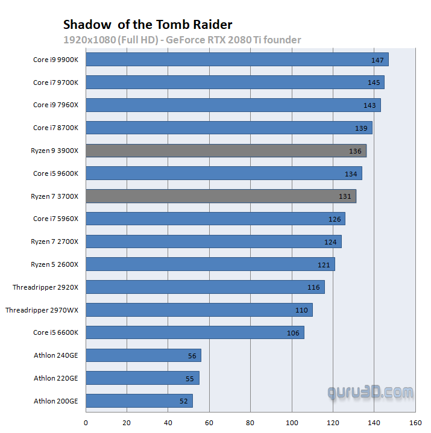
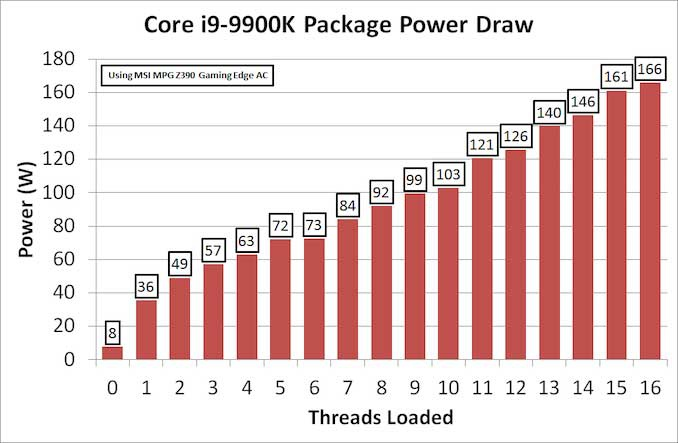
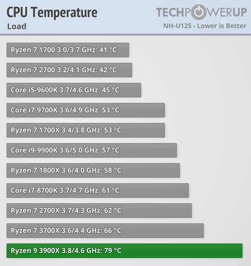

Con la salida al mercado de los nuevos microprocesadores de AMD bajo la arquitectura Zen 2, el mercado de CPUs se ha revolucionado por completo, ya que los de Lisa Su no solo han conseguido un aumento de rendimiento considerable, sino que han incluido un mayor número de núcleos en su plataforma entusiasta. Hoy nos centraremos en su CPU más rápida, el Ryzen 9 3900X, el cual será comparado contra el i9-9900K ¿qué procesador es mejor y más recomendable?
| Modelo de procesador | Caracteristicas | |
|---|---|---|
| Número de nucleos e hilos | Frecuencia | |
| Ryzen 9 3900k | 12 nucleos y 24 hilos | De 3.8 GHz a 4.1 GHz |
| i9-9900k | 8 nucleos y 16 hilos | De 3.6 GHz a 4.7 GHz |
| En la siguiente tabla, se muestra las caracteristicas de cada modelo de CPU | ||
AMD VS INTEL
Comparativas
Para llegar a una conclusion se realizara las siguientes pruebas:
- CPU-Z
- Cinebench R15
- PCMark 10
- Gaming
- Consumo
- Temperatura
CPU-Z

El rendimiento de ambos es muy alto, donde en Single Thread vemos como el procesador de Intel se impone
por un 3,20%, pero esto cambia cuando hablamos de Multi Thread, donde los 8 hilos de más del Ryzen 9 3900X
se hacen notar e impulsan su rendimiento hasta un 54,25% más.
La cifra es realmente llamativa, ya que el número de hilos totales es de 16 vs 24, es decir, hay una diferencia
del 50% a favor del procesador de AMD, por lo que ese 4,25% de GAP es el mérito real que podríamos extraer a
igualdad de hilos. No hay demasiadas sorpresas aquí: Intel es más rápido con un hilo y AMD con varios.
Cinebench R15

Cinebench R15 muestra de nuevo las diferencias de rendimiento en multitarea, donde de nuevo los 8 hilos que el
Ryzen 9 3900X tiene de más se dejan sentir. Y es que el i9-9900K logra una puntuación de 1911 puntos, mientras
que el Ryzen la eleva hasta los 3081 puntos, esto supone un 61,22% más de rendimiento, lo que significaría a
misma frecuencia operativa, pero igualando núcleos con el procesador de Intel un 11,22% más de rendimiento.
Dicho aumento se produce por la mejor optimización de los recursos que logra AMD en este benchmark, donde logra
extraer todo su potencial.
PCMark 10

PCMark 10 es una suite de 3DMark que analiza el rendimiento general del equipo, donde por ejemplo pone a prueba
a los procesadores bajo entornos de web Browsing, conferencias, productividad, edición de fotos o edición de vídeo,
por lo que es muy interesante de cara al usuario medio.
Las puntuaciones lo dicen todo: el Intel Core i9-9900K logra 4707 puntos mientras que el Ryzen 9 3900X se eleva hasta
los 6194 puntos, una diferencia del 31,59%. Al ser un test tan completo, el número de núcleos en uso va variando
dependiendo del mismo, al igual que la frecuencia según la carga necesaria y sus estados de energía.
Igualmente, en los apartados de edición el Ryzen sacará ventaja por sus hilos de más frente al Intel Core, por ello
la diferencia siempre tornará en beneficio del AMD, aunque esta se reduzca frente a los visto en otros test.
Gaming

Estas CPUs se engloban dentro de las plataformas de escritorio como procesadores de gama entusiasta, es decir, están
dedicadas para multitarea y enfocadas a jugar. Hasta ahora AMD había pecado de falta de IPC en sus Ryzen, de poca velocidad
de memoria y de una menor frecuencia, pero con Ryzen 3000 y Zen 2 ha conseguido superar a Intel en instrucciones por ciclo,
incrementar la velocidad de sus memorias en gran medida y dar un leve impulso a la frecuencia.
Esto y los datos que AMD presentó con Strange Brigade en el E3 nos hicieron pensar que, por fin, AMD iba a estar a la altura
de Intel en gaming. Por desgracia esto no es así, ya que como vemos, los FPS en Strange Brigade dejan al Ryzen 9 3900X a 9 FPS
del i9-9900K (-4,12%).
Los números en este apartado no acompañan a los de Lisa Su, ya que queda a 11 FPS en SOTTR (-8%), 25 FPS en Far Cry 5 (-19,68%),
24 FPS en Deus EX (-19,51%), 13 en BFV (-8,72%) y 5 en F1 2018 (-2,79%). Esto evidencia que, aunque el paso adelante es elevado
frente a Pinnacle Rigde con los Ryzen 2000, no es suficiente para alcanzar a Intel en este aspecto, ya que esta sigue siendo superior
Consumo

El consumo es algo que a muchos usuarios les preocupa, ya que la factura de la luz no para de subir y actualmente representa un
problema para cada vez más familias.
En lo referente a estos dos procesadores, los procesos litográficos tienen mucho que decir al respecto, ya que por ejemplo vemos
como el i9-9900K se eleva hasta los 166 vatios al cargar sus 16 hilos, mientras que el Ryzen 9 3900X llega al límite del TDP de
la plataforma con 142 vatios de consumo.
Temperatura

Las temperaturas es otro punto realmente importante, ya que la elección del procesador se puede ver turbada por nuestra refrigeración.
Para los siguientes datos se usó un Noctua NH-U12S bajo blender, simplemente por ser una prueba de estrés real y no simulada.
Como vemos, el Ryzen 9 3900X se lleva la palma con 79 grados, mientras que el i9-9900K se queda en 57 grados bajo carga. Esto significa
que el procesador de AMD está un 38,59% más caliente que el de Intel, todo con un consumo menor. Al parecer, incluir dos chiplets y 8
hilos más aumenta la temperatura 13 grados, ya que el Ryzen 7 3700X con una frecuencia mayor en carga logra 66 grados, donde al mismo
tiempo también es alta de por sí frente al i9-9900K.
Conclusion
Como vemos, ambos procesadores tienen sus pros y sus contras, donde a un precio casi idéntico se hace más patente que nunca que tengamos
claras nuestras necesidades y prioridades. A groso modo, el Ryzen 9 3900X es un procesador más enfocado a la edición de audio y vídeo,
donde es capaz de sacar mayor provecho de sus características generales e hilos.
El Intel Core i9-9900K es una CPU enfocada más al gaming, donde se muestra ligeramente superior al Ryzen y donde los núcleos e hilos no
priman tanto. Para ser concretos, en lo referente a CPU para multimedia, el Ryzen 9 3900X le endosa un 11,8% de media al i9-9900K,
mientras que en gaming el segundo logra superar al primero por un 4,7% tras la batería de juegos.
Esto nos deja unas medias muy curiosas y un ganador, ya que en rendimiento total por dólar el Ryzen 9 3900X se impone por un 8% al i9-9900K
lo que refleja una distancia estrecha para tener un precio muy similar entre ambos. La elección entre uno y otro dependerá, como hemos dicho,
de las necesidades de cada uno, ya que si buscamos una CPU en exclusiva para gaming la mejor opción es el procesador de Intel, mientras que
si hacemos streaming gaming y editamos vídeo en alta calidad y de larga duración el Ryzen puede ser mejor opción.